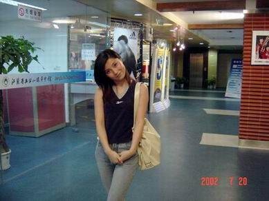

Archives : 2002-07
一声叹息之我所忆 @ Jul 31, 2002
昨天下班之后把修好的电脑搬回家，搬运的过程总是令我愉快，终于有电脑可以用了。这几日只有父亲和我在家，母亲早归晚出的奔波于姐姐家和我们家之间做家务，为此我有很多的怨言，妈妈太过辛苦了，不是吗？偶尔遇上她不开心的时候我却找不出打趣的话题来让老妈开心。
昨晚从自己收藏的CD里精选了一些喜欢的歌曲和音乐制作成MP3，准备周末去庐山旅游时的路上听。等我做完这些事情时间已经很晚，打开电视随意的翻台看，南京电视台科教台正在播放电影《一声叹息》，片子已经放到后半段，这让我回想起2000年10月份的那段日子。我看这部片子是与镯子、AIR还有NICK在上海梅陇镇的电影城。
NICK那时刚去上海不久，外型还很是苗条，面孔多少也保留着做学生时的些许气质。谁知道短短两年之内NICK的体型腐败得如此之快，连脖子都找不到了。想必是生活稳定心宽体胖，呵呵...中学那会儿不知道谁给NICK起了一个血腥的外号：屠夫，写到这里我真的忍不住笑起来。记得我还画过一副图，图中的男人手拿两把宰牛刀，刀尖上沾满血迹，文字标注写着“我是郑屠”。可我认为“noodle”的绰号更符合NICK当时的形象。其实我一直喜欢胖的男孩，那种体型的男孩让人感觉有更多的安全感。
AIR，长我两岁，白白胖胖、绝对老实憨厚的人，要形容一下老实憨厚的程度可以看看他在女孩面前的表现就能略知一二。这样的类型也属于我们这个社会的绝版。所以如今的女人爱男人，老实憨厚起不了决定性的作用。前天在书上读到一句经典的话：甜言蜜语是杀死女人的毒药。男人听到这句话可算又学了一招，女人则要通过这句话来好好反思一下我们的虚荣心。写到这里让我联想到我家的“小小”（雄性）和邻居家的“豆豆”（雌性），可巧今年的3、4月份我拍下过他们耳鬓厮摩时的照片，豆豆的眼神是那么的害羞，象个可爱的小女孩，他们好象热恋似的在草坪上嬉戏打闹。就在几天前，老妈告诉我豆豆生下四只小宝宝，当然那不是我家小小的宝宝。我姐姐说我们家的小小傻呗...昨晚带小小出去遛，遇见豆豆独自坐在路边，身上的毛被剃了个精光，看见豆豆我心里有点难过。昏暗中的豆豆早已没有往日的活泼，呆呆地坐着，呆呆地看着小小，小小在豆豆身边转悠了几圈，被我唤了回来。
镯子是我在南京电视台心动聊天室认识的网友，她的形象在我心中永远是29岁（我认识她那年她29岁），写的一首好文章，镯子的作文簿放在心动聊天室的入口处，读她文章的时候我只知道比我写的好，想着这个人思维紧密感性有余，是个擅于玩味生活感受的女子，说起话来很是拿腔捏调一副十足文学女青年的架势。她的名片上写着Assistant Manager,曾经做过6年的法官，主要是判决离婚案的。她抽烟的姿势很优美，改变了从前我对女烟民的不良印象，我想这不仅是因为其优美的姿势吧？！通过她我知道一种名为Long Island Ice Tea的鸡尾酒，镯子说那种鸡尾酒喝的时候没有感觉，后劲却很大。由她引领我们在上海1930BAR里点了这种酒品尝，可是那一夜我一直没有醉，呵呵！镯子说王安忆写一个人脱一条棉毛裤可以写出1000个字来，我想镯子也一定能写出500字...我们当时讨论最想过怎样的生活，镯子回答道：“我最想过的生活就是坐在墙根下晒晒太阳...”晚上我们在浦东镯子的租住房里打地铺过夜。她租住的房子是早先上海政府为那些没有房子居住的新婚夫妇特别建造的，一室半及一间只能站下一个人的卫生间。走廊的墙壁上起了泡，很多地方被烟熏得黑黑的。镯子的卧室兼书房兼活动室搞的很不错。一张床、一个小小的床头柜、书桌、衣柜、电脑、躺椅，书桌上的LANCOME化妆品，卫生间里资生堂的洗发沐浴露，书桌靠着的墙壁上贴着英文的美国地图，洗衣机放在那半间房中，再也放不下更多的家当。从书桌上堆积的各种各样的书籍、英文大词典，美国地图等等东西多少透露出这个房子主人的生活梦想！当我躺在席子上正准备睡觉，看见躺椅下面一只竹藤篮子，里面盛着镯子有着蕾丝花边的内衣内裤，一只青少年的蟑螂从竹藤篮子的底部缓缓爬出。镯子不继续做她的法官跑到上海外企工作，而那就是镯子在上海的单身宿舍，一个上海外企白领的居住地。那座所谓的“鸳鸯楼”（上海政府给小夫妻过度的房子）里还居住着很多象镯子这样的单身白领，以及一些外国人。后来听说有房地产商针对这类人群在上海开发了高档的单身公寓，30-50平米左右一套，装修好的，每平米5000-6000人民币的价格出售，销售的很旺。NICK的大学同学就买了一套这样的住房。我们在上海那会儿镯子和交往了6、7年的男友买了新房子，在虹桥的位置，因为镯子工作在那家房地产公司，所以150平米只支付了30万人民币。2000年未婚的镯子带着我们去STAR BUCKS，去上海1930BAR，去梅陇镇电影城...
那座电影城建立在梅陇镇购物广场的10楼（如果我没有记错楼层的话），有10个大小不一的电影播放厅。买了爆米花和可乐，每个座位的扶手上都有放置可乐杯子的地方，所谓的人性化也能得到一点体验吧！那个电影厅不大，进去的时候里面黑灯瞎火的，墙壁上很多星星月亮的图案在特殊的灯光下隐隐发着漂亮的光。在童话般的“梦境”中我们看了那么一部悲哀的电影。现在还清晰记得一些对白，转载如下:
*—这是两种感情。晚上睡觉，我摸着你的手，就像摸着我自己的手一样，没有感觉，可是要把你的手锯掉也跟锯掉我的手一样疼．．．．．．
—听我说句话，肺腑之言，千万千万别走到我这步，她就是一仙女儿你也得忍了。再说哪有仙女呀？
—你以为你现在这样就感恩戴德了？人家恨你恨的连牙根多咬碎了，但人家没吐出来，人家生给咽下去了，人家比你高。
—卖盗版碟的，我一瞧见这种人，气就不打一处来。你这拍戏还没播呢，满大街全是盗版。赶明我发明一种病毒，谁放这碟，就把他机器给烧了！*
不知怎么的,越是不确定越是没有把握,越是不能预知未来,同时也就越吸引人们不能自控的去追求和探寻,这就是”爱情”!爱情的短暂性就如同烟花一样璀璨，稍瞬即逝,只是璀璨过后我们的心中都留下些什么？
喜欢 @ Jul 25, 2002
——一个朋友发短信给我，感觉写的挺好的特转载如下：
我喜欢生命里只有单纯的盼望
只有一种安定和缓慢的成长
喜欢岁月漂洗过后的颜色
喜欢那没有唱出来的歌
更喜欢和这个看短消息的人做一生一世的朋友
小说《卡布其诺》 @ Jul 23, 2002
手中有本名为《卡布其诺》的小说，作者是在意大利弗罗伦萨长大，法国巴黎政治学院毕业的Mariclla Righini，在这本书中，我们可以品尝到香纯可口、绝妙无比的“法不其诺”和“瑞斯德迪斯摩浓缩咖啡”，这可是巴黎最好的咖啡！
这些故事发生在巴黎的一家小咖啡店中，四位知心的好友习惯每周一次到这家咖啡店聚聚，分享彼此的心情故事。
故事的情节发展则围绕这四位人物而展开。他们都是这家咖啡店的常客：希瓦娜，拉丁美洲的钢琴家，曾与某位努比亚（作者杜撰的国名）外交官有过一段轰轰烈烈的罗曼史。莉莉，在一间服装公司的编辑部工作，是一位喜欢冒险、美丽而又干练的女强人。伊罗娜，典型的大学教授，专攻俄文和斯拉夫语言，同时也是一位有干劲的母亲。
至于狄雅，则是演员兼剧作家，她固定在巴西做一些专业和感性的演出。
爱情与旅游、工作与热情，是故事总丰富交错的主题。剧中人物尽管在情感上获得自由的解脱，但在心里深处却显得极其空虚脆弱，他们凭着一种完全解放的态度、幽默的心情及真诚的情感来增进彼此的信任和交流。
书中，由一位那不勒斯年轻人，于是咖啡店的调配师隐身于故事背后，却又主导情节的发展，他总是为她们准备最经典、最地道的咖啡。整个过程中，他只是一个旁观者，从未与这四个女人交谈，却是她们秘密交谈时，不经意倾听者。言词描绘中，没有陈词滥调，飘散的只是时光流逝的无奈和追寻永恒的挣扎余味。
——法国各大媒体资料对《卡布其诺》的推荐
***《法国新鲜报》
无论我们是男是女、年轻与否，这本书给我们现代生活一股清凉剂。而且让我们了解到爱是一切幸与不幸的源泉，是我们任何人都无法轻易度过的。
***《法国读书杂志》
连喝两口阿拉比卡咖啡，喉头感到有些吃紧时，读读这本小说中充满可爱的只字片语，让人想象每天的生活有如咖啡豆磨碎成粉般，散发阵阵咖啡的香味。
***《法国女性杂志》
跟着这本书，我们随时可能触及生活悲惨的那一面。但又常常相反，遇见的是不断的嬉闹、轻狂、一些无聊的事。有时，好玩的情况会让人笑到疯狂。作者以她幽默欢愉的文笔，宽容的态度来描述一段段现代女子的都会爱情。
偶遇 @ Jul 21, 2002
如何在凌晨的时候保持清楚的头脑去写点儿心里的故事，一直很难！怕此时不写明早只剩下一颗空心了。不得不写点什么。
傍晚到一直健身的会馆去游泳，记次卡还有四次就要结束了，在前台时买了半年卡，以后想一天去会馆10趟都行（俨然象是占了便宜的嘴脸哦？！）其实不然，若没有时间同时也没有毅力的同志还是不要买不记次数的会员卡，这样比较划算。今夏对于我来讲，比往年多了很多的意义，今夏我开始游泳了，且到了一个好地方，至少在你游泳的过程中不会因为泳池拥挤而频频停下来，可以拥有蓝色清澈的水，沐浴的空间和面积很是明亮宽敞。锻炼也应是一种特别的享受。

——小羽在会馆的前厅，她目前正在北京广播学院读研究生。
刚上电梯，遇见南京电视台体育节目主持人朱凯、夺冠节目原主持人小羽，还有朱凯的弟弟。小羽是我中学低我一界的校友，因同在校舞蹈队活动，同时也是队友。在我印象中的小羽体型微胖，眼睛大而明亮，说话时声音通过脑门后面到达鼻子发出来的，就是声乐里美声唱法的发音方式，有点那个味道。后来小羽真的在南艺学习了四年声乐。成年的小羽俨然是个活脱脱的美人了，比她小时侯更有吸引力。
锻炼完时间已经将近20：00，索性和他们一起去星汉大厦那边的“小草屋”吃韩国料理，可能是饿了的缘故，我从来就不喜欢吃的韩国料理今晚却尤为的好吃。

——这些小菜全是老板的姐姐亲手腌制的，味道还不错！
（未完，待续，实在是太瞌睡了。）
陪GRACE教堂还愿 @ Jul 15, 2002
有兴趣的朋友可以阅读这部网络小说：《成都，今夜请将我遗忘》。
昨晚出门之前我草草洗头洗澡，胡乱穿了汗衫和短裤就往外面跑，出门的时候离我和GRACE约好的时间还差一刻钟。我感觉自己是去见上帝的，那是我第一次去教堂。到了圣保罗教堂门口晃悠了两圈没有发现熟悉的身影于是打电话给GRACE，“我到了，你在哪儿？”“我在门口啊，等你呢。”GRACE答道。我一回脸看见许久不见的她，穿着一件浅绿底色五彩图案的短袖棉衬衣，白色短裙，手里捧着一束红得非常艳丽的玫瑰。还是那个样儿，她一点没有变。我笑了，那是昨天第一次由衷的笑，下午的时候一个人缩在空调房间里看《阿育王》，我一边感慨印度人拍片子千篇一律一边在动情处掉眼泪，我不得不说那部片子使我更加郁闷，见到GRACE之后我感觉才渐渐好起来。
我问：“他呢？”
“他在里面拍些照片。”
我们一起往教堂里面走，看见她的他从那座黑灯瞎火的大房子里走出来。离做礼拜的时间尚早我们决定去旁边的麦当劳餐厅吃点什么。顺便在灯光好的地方拍些双人合影。GRACE手中捧了9朵红玫瑰，杨和她的无名指上各带了一枚白金镶钻的戒指。GRACE满脸幸福，杨的表情也甚为羞涩，我不禁感叹自己结婚之前是否也能如他们这般的幸福和浪漫。我确信不会有什么羞涩之情出现在我的面孔上，90%的可能是满面的泪。听说朋友的妻和他领证那天坐在民政局的凳子上痛哭不已，现在我似乎也能理解十之八分。
19点钟做礼拜开始，我们急匆匆赶到教堂里面已经开始学唱颂歌了。一个在橘色灯光下面孔白皙的如同他身上的白衬衫的男人在台上领唱，下面上的人跟着唱，最后一起合唱。我们在进门处各领了一本圣经和颂歌的书，第一首颂歌的歌名叫《爱的彩虹》，第二首为《我灵镇静》。歌唱完，听一个操着广东口音的教士说圣经故事，起初我以为那个家伙是个外国人呢，你可以想象老外说中国话什么味儿，他就是什么味儿。那个家伙的说教技巧实在是不敢恭维，一点感染力没有不说还把圣经当作世俗的人际关系来分析。还不如我来讲，在别人还没有感动之前我准保自己已经投入的一塌糊涂，然后眼睛里闪烁着泪光。若教士说教说不到这种份儿上，怎么吸引教徒来信奉宗教？台上教士说的那些废话还没有GRACE的表情能打动我，我身边的GRACE闭着眼睛将双肘撑在前排靠背上，手里紧紧攥着一个小小的十字架，好象攥着她一生的幸福。她那时的虔诚不仅是对我主的膜拜，应该还有她对爱情和即将诞生的新家庭的执着和期望。活到她这个年纪还能这么单纯，实在是很难遇到了，就这一点上我和她的杨有认同感。我不知道是我更珍惜GRACE还是杨？GRACE祷告完毕，将小十字架放在自己嘴上亲吻一下，接着让杨亲吻，本以为这样算结束了，没有想到她将杨亲吻过的十字架移动到我面前让我亲吻一下，我连连谢绝。
从圣保罗教堂出来，我们在一家叫做“顶点”的餐馆准备继续填饱我们的胃。“教堂还愿”（点击小图片可浏览完整尺寸的照片，大的图片比较清楚。）就这么结束了，此时每个人的话匣子才打开。GRACE现在每天上午上托福课，本来他们二人准备去香港大学念书，后来遇见一位芝加哥大学的在读博士，介绍了一下相同专业人士的求学动机和过程。这对GRACE他们二人对于研究生毕业之后的计划起了影响和引导作用。很长时间我以为自己再也说不出什么了，但是昨晚我找到了被世俗掩盖下的那个原来的我，很开心还能拥有聊天的愉悦，大概只有见到知己和多年的好友才可能短暂的愉悦一下吧！让我们祝愿GRACE和她的杨一生平安幸福，健康美满！
寂寞咖啡之7月13日 @ Jul 13, 2002
天气没有前奏的就这么突然热起来了，中午13：13分，这时候没有什么特别的事情，或许只有那些在街头巷尾做小生意的人们才不得不在户外忍受着高温下的煎熬。
一早到姐姐家帮他们带两个小孩，一个10岁的女孩和一个13岁的男孩，他俩是表兄妹关系，他们的父亲是兄弟。看见他们在一起做作业挺让人羡慕的，羡慕他们相近的年纪。我的哥哥姐姐比我年龄大很多，小时侯常常希望能有个年龄相近的哥哥或者是姐姐，这样可以有很多贴心的话可以交流，他们也会在相近的时期并在我之前经历我即将经历的喜怒哀乐。同时还能做个小尾巴，混在他们朋友的圈子里跟着一起吃喝玩乐。活到2002年7月份，再怎么幻想大我一两岁的哥哥、姐姐都是妄想。妄想固然没有什么坏处，妄想的时候觉得前面有曙光、且能感受到些许幸福和甜蜜。若非要和“痴心”牵扯到一块儿事情俨然就要令人悲观了！我常劝别人要么不要妄想，若克制不住妄想就拼命的去“痴心”，直到心死！心死了，人才会重新收拾现实的生活好好来过。
我从家里带了一盘《星战前传Ⅱ：克隆人进攻》的VCD，由伊万-麦格雷格、娜塔丽-波特曼主演。准备和他们一起看。并带了光盘准备把刻录在上面的照片上传到我的相册中去，姐姐家安装了宽带网络，速度比我们公司的网络速度似乎还要快一点，比起我家里的上网速度更是天壤之别。象我这种写个什么文字的东西喜欢1、2个小时挂在网上的人，很适合使用宽带。
前天同事介绍一篇网络小说给我看，神秘兮兮的犹豫了半天才将一个磁盘递给我，作者叫“慕容雪村”，小说名为《成都，今夜请将我遗忘》。打开文件视线所及之处满是女人、男人以及生理和心理的描写。主要是通过一个已婚男人的视线去牵引整部小说的。慕容雪村写的过瘾，我们看的精彩，精彩到悲哀，那也是生活的一种。生活不是小女孩和小男孩的爱情，有时候我感觉生活是赤裸裸的羔羊，爱情这东西就象食品一样放久了会发生质变，要么吃了它，要么冷冻起来，要么就别把它买回来。有些人看见好的就要，买回来发现吃不了放着让它变质......小说没有写完，跟贴的人很多，催着作者继续努力的人也很多，等我回家查一查哪个网址做个连接与大家共享。想必来这里的都是成年人吧！？
寂寞咖啡之Careless Whisper @ Jul 12, 2002
晚上在那条小街上的音像店里我买了一盘George Michael的专辑《Freeek》，查了资料才发现原来George Michael就是演唱Careless Whisper歌曲的歌手之一，“Careless Whisper”常被译为《无心快语》，作者是这个组合之一的George Michael，他写这首歌时年仅17岁。这首歌也成为了80年代最具特色的歌曲之一，因而也是播放率最高的歌曲之一。1981年 George与小学同班同学Andrew Ridgeley组成了他们的第一支乐团“Executive”；之后，乐团又改组为“Wham二重唱”。但这个组合只维持了短短的三年就告破裂。在Wham仍处于事业巅峰时，乐队解散了，但George Michael并没有从此在歌坛消失，而是开始了他的个人演唱生涯，直到现在， 他仍是英国当红的歌星之一。
我特别喜欢的歌曲在网络上没有找到，先POST两首他的歌给大家听听。
《The first time ever I saw your face》 

Careless Whisper
Time can never mend
The careless whispers of a good friend
To the heart and mind
Ignorance is kind
There’s no comfort in the truth
Pain is all you find
Should have known better, yeah
I feel so unsure
As I take your hand
And lead you to the dance floor
As the music dies
Something in your eyes
Calls to mind a silver screen
And all its sad goodbyes
I’m never gonna dance again
Guilty feet have got no rhythm
Though it’s easy to pretend
I know you’re not a fool
I should have known better than to cheat a friend
And waste a chance that I’ve been given
So I’m never gonna dance again
The way I danced with you
Time can never mend
The careless whispers of a good friend
To the heart and mind
Ignorance is kind
There’s no comfort in the truth
Pain is all you find
I’m never gonna dance again
Guilty feet have got no rhyhthm
Though it’s easy to pretend
I know you’re not a fool
I should have known better than to cheat a friend
(Should have known better, yeah)
And waste a chance that I’ve been given
So I’m never gonna dance again
The way I danced with you
(Never without you)
Tonight the music seems so loud
I wish that we could lose this crowd
Maybe it’s better this way
We’d hurt eachother with the things we want to say
We could have been so good together
We could have lived this dance forever
But now who’s gonna dance with me
Please stay
And I’m never gonna dance again
Guilty feet have got no rhythm
Though it’s easy to pretend
I know you’re not a fool
I should have known better than to cheat a friend
And waste a chance that I’ve been given
So I’m never gonna dance again
The way I danced with you
Now that you’re gone
Now that you’re gone
Now that you’re gone
Was what I did so wrong
So wrong that you had to leave me alone
我愿 @ Jul 12, 2002
我愿听你喜欢的音乐
我愿徘徊在你经常走过的路上
我愿从玻璃反光的影像中去看你
我愿 我愿
将深情的回眸化作婉然一笑
我愿是你手中燃烧着的那支烟
寂寞咖啡之7月2日夜 @ Jul 03, 2002
同一个办公室的同事，辞职两个调整到其他办公室两个，进来四个，两排座位，前面坐的一律是女职员后面坐男的，我认为更合理的安排应该女职员坐在男职员后面，这样拿个什么卫生用品会更方便。老总的办公室从走廊的南面迁移到原先用来复印、放置微波炉的房间，南面的房间一下就空出来两个，相比之下弧形朝北的办公室显然要热闹的多。好在我们办公室都是年轻人，关系应该比较好相处。
最近一直想写却写不出任何可以咀嚼的文字来，写字的灵感不知道都跑哪里去了？

—那个认识的行长助理上个星期四被抓住，关在江东门派出所。据说这是江苏省银行系统目前最大的经济案件。他被警察抓住就象巴西这次得世界杯冠军一样的没有新意及令人失望，索性跑出去了，这样让等着读故事的我们觉得生活也不那么的枯燥；
—朋友的同事我只谋面过两次。一次是去年在龙蟠路上那个展览馆的秋季书展上，她那时侯风姿卓越，穿着一件淡青色的休闲西服，齐肩发，戴着长长的藏饰耳环，白皙的面孔配上润红的唇色，加上看人时如微风滑过面颊似的眼神，由不得你不注意，（注意了却有点儿闷气，怎么被人这样看了一眼呢？）那种人自命不凡，属于自我感觉绝对良好的人。正因如此才越发的吸引我的目光。第二次在东方商城闲逛遇见的，2、3米之内我才辨认出来是书展上的她。整个儿变成白面馒头了。浅底色肉色花案的吊带裙，长及腰部的头发束成一把。裙子里面的三角形黑色内裤若隐若现，微微突起的小腹。唯一没有变化的是她的气质。这样总算没有让我太失望。她打算和丈夫开车去西藏，然后从西藏飞尼泊尔。我喜欢看有味道的女人，第二次遇见她虽不能算作赏心悦目，但仍可以作为一种视角上的享受；
—几个月前认识的美国网友正在申请到北京或者上海的大学学习中文。网上遇见他的时候，他正处于失业状态，他是一个工程师。几个月后网上再次相遇了，他告诉我他在卖车，上个月薪水是USD6300.00，这个月有望达到USD10000.00。他准备9月份到中国来。我问他学完之后准备用中文做什么？他说当他在中国的时候就让中文发挥它的作用。如果只是为了这个千里迢迢跑这么远来学习，换做中国人没有几个会这样去选择的。老外赚了钱就享受，去做自己喜欢的事情，履行自己的计划。无论如何，表面上活得比中国人洒脱多了，不是吗？
—7月2日，今年的、2002年的这一天，去年2001年的这一天，2000年的7月2日...我都在做什么呢？那时侯的我是什么样子？似乎完全忘记自己是什么样的了？！但是我们却有可能清楚记得别人或者是别的事物是什么样子的。一段旋律、一种色彩、那份气息亦或是温度的感觉都有可能把我们带回到记忆中去。相同的这一天在不同的年份里，我们是否会重复发生相同的经历和感受？无论如何今天对于去年来讲是一周年，无论如何今天的我很快乐，希望明年的7月2日我依然可以是快乐的！